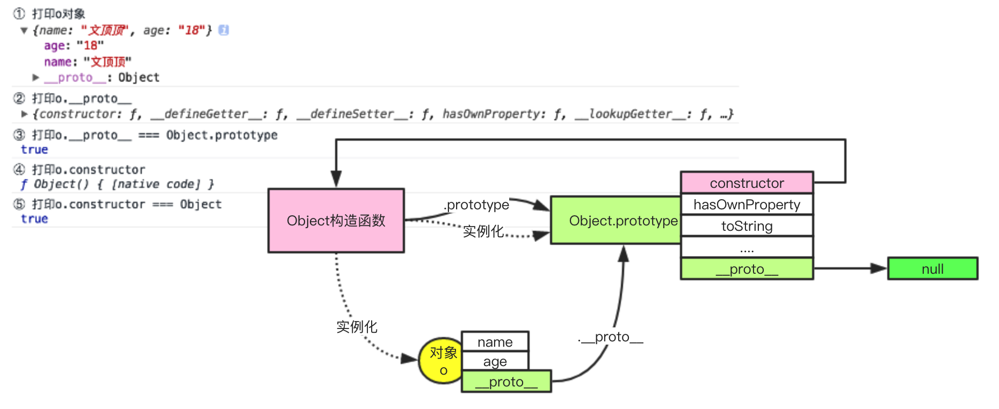

javaScript系列 [01]-javaScript函数基础
1.1 函数的创建和结构
函数的定义：函数是JavaScript的基础模块单元，包含一组语句，用于代码复用、信息隐蔽和组合调用。
函数的创建：在javaScript语言中，可以说函数是其最重要也最成功的设计。我们可以通过三种方式来创建函数。
① 函数声明② 字面量方式创建③ 使用Function构造函数创建
代码示例
1 | //01 函数声明 |
函数的结构
函数的一般表现形式为：
1 | //函数声明 |
通常，函数包括四个部分：
（1）保留字，function。
（2）函数名，这里为fn。
（3）圆括号以及包围在圆括号中的一组参数。
（4）包括在花括号中的一组语句。
❐ 函数名可以被省略（称为匿名函数），函数名可用于函数调用或者是递归调用，另外函数名可以被调试器和开发工具识别。
❐ 函数声明时的参数为形参，可以有多个，多个参数之间使用逗号进行分隔。
形参将在函数调用的时候被定义为函数中的局部变量，[注意]形参并不会像普通变量一样被初始化为undefined，它们的值根据函数调用时传入的实际参数值设置。另外，函数调用的时候并不会对实参的类型进行检查。
❐ 函数体是一组语句，它们在函数
被调用的时候执行。函数执行完毕后，会返回一个值。
函数的调用：函数声明后可以通过（）运算符来进行调用，JavaScript语言中，只有函数可以被调用。当函数被调用的时候，如果存在参数传递，那么会把实参的值传递给形参，并按照从上到下的顺序逐条执行函数体内部的代码。
1.2 函数和对象的关系
JavaScript中的函数本质上就是对象。
在使用typeof 关键字对数据进行类型检查的时候，得到的结果可能会让我们产生错觉。
1 | var o = {}; |
实际上，函数和对象没有质的区别，函数是特殊的对象。
函数的特殊性
① 函数可以被（）运算符调用[最重要]。
② 函数可以创建独立的作用域空间。
③ 函数拥有标配的prototype属性。
因为函数本身就是对象，所以在代码中函数可以像对象一样被使用，凡是对象可以出现的地方函数都可以出现。
❐ 函数可以拥有属性和方法。
❐ 函数可以保存在变量、对象和数组中。
❐ 函数可以作为其它函数的参数（称为函数回调）。
❐ 函数可以作为函数的返回值进行返回。
函数和对象的原型链结构
我们可以通过下面列出的简单示例代码来分析对象的原型链结构。
1 |
|
通过对该代码的运行和打印分析，可以得到下面的图示。

我们也可以使用同样的方式来分析函数对象的原型链结构。
1 |
|
顺便贴出研究Function原型结构的代码
1 | //说明：下面三行代码表明Function的原型对象指向一个空函数 |
通过对函数对象原型结构的代码探索，可以得到下图的原型链结构图（注：原型链并不完整）
函数的其它隐藏细节
① 函数天生的prototype属性
每个函数对象在创建的时候会随配一个prototype属性，即每个函数在创建之后就天生拥有一个与之相关联的原型对象，这个关联的原型对象中拥有一个constructor属性，该属性指向这个函数。
简单描述下就是：
1 | function f(){ //......} //声明函数 |
备注：在[ECMAScript标准中函数创建相关章节](https://www.ecma-international.org/ecma-262/5.1/#sec-13.2)有这样一句话：NOTE A prototype property is automatically created for every function, to allow for the possibility that the function will be used as a constructor.解释了给新创建函数添加prototype属性的意义在于便于该函数作为构造函数使用。
② 函数何以能够被调用
我们已经理解了函数本身就是对象，但又区别于普通对象，最大的区别在于函数可以被调用，（）被称为调用运算符。
❗️ 函数可以被调用的原因在于JavaScript创建一个函数对象时，会给该对象设置一个“调用”属性。当JavaScript调用一个函数时，可以理解为调用该函数的“调用”属性。
1.3 函数的调用和this参数
函数名后面跟上（）表明这是一个函数调用。调用运算符：是跟在任何产生一个函数值的表达式之后的一对圆括号。圆括号内可以包含N（N>=0）个用逗号分隔开的表达式，每个表达式产生一个参数值。每个参数值被赋予函数声明时定义的形式参数名。
函数的调用
JavaScript中有四种调用函数的模式
① 对象方法调用模式② 普通函数调用模式③ 构造函数调用模式③ 上下文的调用模式
除了声明函数时定义的形参外，每个函数还接收两个附加的参数，分别是this和arguments。其中arguments用于存储函数调用时接收到的实际参数，this的值则取决于函数的调用模式，下面分别讲解。
普通函数调用模式
当函数并不作为其他对象的属性，直接使用调用运算符来调用时，我们认为它使用普通函数调用模式。
1 | <script> |
备注：在我们看来上面的调用方式非常简单清楚，而且this的指向也没有任何问题。但[JSON](http://json.org/)的作者[Douglas Crockford](https://zh.wikipedia.org/wiki/%E9%81%93%E6%A0%BC%E6%8B%89%E6%96%AF%C2%B7%E5%85%8B%E7%BE%85%E5%85%8B%E7%A6%8F%E7%89%B9)指出这是JavaScript语言设计上的一个错误。因为把this直接绑定给全局变量的方式没有考虑到函数作为内部函数（在其它函数内部声明的函数）使用过程中需要共享外部对象访问权的问题。 他指出正确的语言设计应该是，`当内部函数被调用时，函数内的this应该和外部函数的this保持一致，即这个this应该被绑定到外部函数的this变量。`无疑，这值得思考和讨论。
对象方法调用模式
对象是键值对的集合，对象可以拥有属性和方法。
当函数被保存为对象的属性时，我们称之为方法。
对象的方法需要通过对象.方法（）或者是对象[方法]（）的方式进行调用。
以对象方法的模式来对函数进行调用，函数内部的this被绑定给该对象。
1 | //01 字面量的方式创建对象 |
❗️ this到对象的绑定发生在方法调用的时候。
构造函数调用模式
构造函数：如果一个函数创建出来之后，我们总是希望使用new 前缀来调用它，那这种类型的函数就被称为构造函数。构造函数和普通函数本质上没有任何区别，开发者总是约定以函数名首字母大写的方式来人为进行区分。
如果以构造函数的方式来调用函数，那么在调用时，默认会创建一个连接到该构造函数原型对象上面的新对象，同时让this绑定到该新对象上。
1 | //01 声明构造函数Person |
❗️ 构造函数调用方式也会改变函数中return语句的行为，如果显示的return语句后面跟着的不是对象类型的数据，那么默认返回this绑定的新对象。
上下文的调用模式
上下文的调用模式，即使用apply或则call方法来调用函数。
因为JavaScrip是一门函数式的面向对象编程语言，所有JavaScript中的函数本质上是对象，也因此函数也可以拥有方法。使用上下文模式对函数进行调用的时候，函数内部的this根据参数传递的情况进行绑定。
1 | //声明函数f |
❐ apply和call方法调用函数，函数内部的this绑定给第一个参数。
❐ apply和call方法定义于Function的原型对象上，所以所有的函数都可访问。
❐ apply和call方法作用基本相同，参数传递的形式有所差别。
1.4 函数的参数（arguments）
函数调用时，会完成实际参数对形式参数的赋值工作。
当实际参数的个数和形式参数的个数不匹配时，并不会导致运行错误。
如果实际参数的数量过多，那么超出的那些参数会被忽略。
如果实际参数的数量不足，那么缺失的那些参数会被设置为undefined。
JavaScript在进行函数调用时不会对参数进行任何的类型检查。
在函数的内部，我们总是可以获得一个免费配送的arguments参数。
arguments用于接收函数调用时传入的实际参数，它被设计成一个类似于数组的结构，拥有length属性，但因为它不是一个真正的数组所以不能使用任何数组对应的方法。
arguments参数的存在，使得我们可以编写一些无须指定形参个数的函数。
下面提供一份示例代码用于对传入的所有参数进行累加计算。
1 | <script> |
1.5 函数的返回值
函数的调用：调用一个函数会暂停当前代码的执行，把控制权和参数传递给正被调用的函数。当一个函数被调用的时候，它会先根据实际参数来对函数的形式参数进行初始化，然后从函数体中的第一个语句开始执行并遇到关闭函数体的 } 时结束。然后把控制权交还给调用该函数的上下文。
函数的返回值：函数体中return语句可以用来让函数提前返回。当retun语句被执行时，函数会立即返回而不再执行余下的语句，return语句后面跟上返回的具体数据，可以是任意类型（包括函数）。
❐ 函数总是会有一个返回值，如果没有使用return语句指定，那么将总是返回
undefined。
❐ 函数的返回值还和它的调用方式有关系，如果使用new也就是也构造函数的方式来调用，若函数体中没有通过return语句显示的返回一个对象类型的数据，则
默认返回this（新创建的实例对象）。
❗️ JavaScript不允许在return关键字和表达式之间换行。